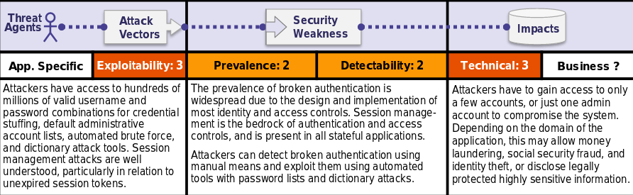

Is the Application Vulnerable?
Confirmation of the user's identity, authentication, and session management are critical to protect against authentication-related attacks.
There may be authentication weaknesses if the application:
•Permits automated attacks such as credential stuffing, where the attacker has a list of valid usernames and passwords.
•Permits brute force or other automated attacks.
•Permits default, weak, or well-known passwords, such as "Password1" or "admin/admin“.
•Uses weak or ineffective credential recovery and forgot-password processes, such as "knowledge-based answers", which cannot be made safe.•Uses plain text, encrypted, or weakly hashed passwords (see A3:2017-Sensitive Data Exposure).
•Has missing or ineffective multi-factor authentication.•Exposes Session IDs in the URL (e.g., URL rewriting).
•Does not rotate Session IDs after successful login.
•Does not properly invalidate Session IDs. User sessions or authentication tokens (particularly single sign-on (SSO) tokens) aren’t properly invalidated during logout or a period of inactivity.
How to Prevent
•Where possible, implement multi-factor authentication to prevent automated, credential stuffing, brute force, and stolen credential re-use attacks.
•Do not ship or deploy with any default credentials, particularly for admin users.
•Implement weak-password checks, such as testing new or changed passwords against a list of the top 10000 worst passwords.
•Align password length, complexity and rotation policies with NIST 800-63 B's guidelines in section 5.1.1 for Memorized Secretsor other modern, evidence based password policies.
•Ensure registration, credential recovery, and API pathways are hardened against account enumeration attacks by using the same messages for all outcomes.
•Limit or increasingly delay failed login attempts. Log all failures and alert administrators when credential stuffing, brute force, orother attacks are detected.
•Use a server-side, secure,built-in session manager that generates a new random session ID with high entropy after login. Session IDs should not be in the URL, be securely stored and invalidated after logout, idle, and absolute timeouts.
Example Attack Scenarios
Scenario #1: Credential stuffing, the use of lists of known passwords, is a common attack. If an application does not implement automated threat or credential stuffing protections, the application can be used as a password oracle to determine if the credentials are valid.
Scenario #2: Most authentication attacks occur due to the continued use of passwords as a sole factor. Once considered best practices, password rotation and complexity requirements are viewed as encouraging users to use, and reuse, weak passwords. Organizations are recommended to stop these practices per NIST 800-63 and use multi-factor authentication.
Scenario #3: Application session timeouts aren’t set properly. A user uses a public computer to access an application. Instead of selecting “logout” the user simply closes the browser tab and walks away. An attacker uses the same browser an hour later, and the user is still authenticated.